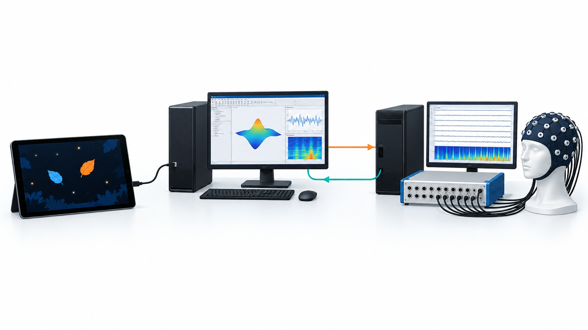
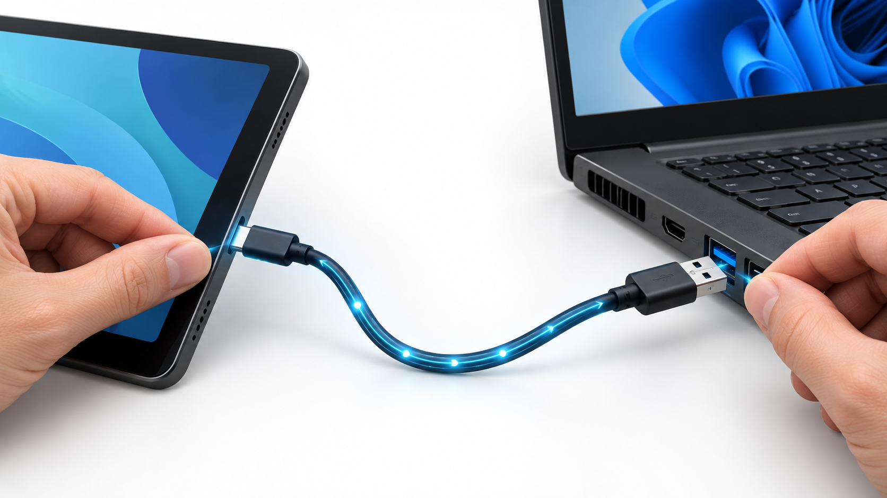

Put the updated files on the correct computer
Changes made on a personal laptop take effect in the lab after the files are copied there.
| Computer | Files and settings |
|---|---|
| P: presentation | Copy run_biosemi_usb_bridge.m, Register-BiosemiTriggerAdapter.ps1 and Start-BiosemiUsb.ps1 into the same FeatureAttention folder. Replace the old bridge. Open MATLAB and PowerShell in that folder using the same Windows login. |
| A: acquisition | Use the current RT_files/RT_experiment_CCA.m and RT_files/RT_acquisition_CCA.m, keeping A's EEG and FieldTrip settings correct. The acquisition code must accept triggers.trial_start = [20 21]. A writes X:\FeatureAttention\nf.txt. |
| Tablet | Use the current APK. In Leaf Game, select UsbBiosemi for Nf Source Type. In Paddle Game, select UsbBiosemi for Connection Mode. Set the USB Biosemi port to 5010. |
P reads A's same live file as D:\Public\FeatureAttention\nf.txt. Confirm these paths refer to the same shared file; two separate copies do not carry live feedback.
Register the trigger adapter once on P
Enable USB debugging on the tablet, connect a data cable to P and approve P on the tablet. Install Android SDK Platform Tools if adb.exe is unavailable.
Before recording, stop the MATLAB bridge and close any older task that owns the trigger port. In PowerShell in the FeatureAttention folder, run:
powershell -ExecutionPolicy Bypass -File .\Register-BiosemiTriggerAdapter.ps1 -LearnAt the first prompt, unplug only the P-to-A trigger USB adapter and press Enter. At the second prompt, reconnect that same adapter and press Enter. Leave the tablet cable and Cedrus response box connected. The script waits up to 15 seconds at each step for Windows to update its device list.
It prints Registered trigger adapter: ... on COM... and saves the physical device's Windows identity under %LOCALAPPDATA%\FeatureAttention\BiosemiTriggerAdapter.json.

Automatic lookup follows the registered Windows identity when its COM number changes. If replacing the adapter or moving a device without a USB serial number changes that identity, reconnect to the original USB socket or run -Learn again. The detector never substitutes another adapter just because it uses the same USB chip.
Start each session
- Check the registered adapter on P.
In PowerShell, run:
powershell -ExecutionPolicy Bypass -File .\Register-BiosemiTriggerAdapter.ps1 -ResolveExpected output is one current port, such as
COM12. You do not enter that number into the game or bridge. Resolve only reads Windows device information; it sends no test markers. - Start recording and real-time CCA on A.
Start Biosemi/ActiView and the existing FieldTrip buffer, then run
RT_experiment_CCA.m. Confirm A prints the intended CCA feedback file path and that P can open that samenf.txt. - Start the bridge in MATLAB on P.
run_biosemi_usb_bridge('D:\Public\FeatureAttention\nf.txt')Expected output includes
Trigger output: COM...andBiosemi USB bridge listening on P-system loopback port 5010. This command resolves the adapter again automatically. Keep MATLAB running. - Keep the tablet USB tunnel running.
In a separate PowerShell window on P, run:
powershell -ExecutionPolicy Bypass -File .\Start-BiosemiUsb.ps1The helper maintains
adb reverse tcp:5010 tcp:5010. Keep its window open. If several tablets are connected, add-DeviceSerial YOUR_TABLET_SERIAL. Useadb devicesto find the authorized tablet. - Start the game and begin a block.
Apply the tablet's
UsbBiosemisettings and start the game. P should printTablet connected. After the instructions appear, press Begin block. Receiving an initial NF record only proves the file/tunnel path is readable; verify fresh records during the trial using the checks below.
Confirm the complete connection before a full run
Run a short test with both C1 and C2 trials and check all three computers. Local software tests cannot verify the P-to-A cable, ActiView configuration or shared drive in the lab.
| Where | What confirms progress |
|---|---|
| P: trial start | Trigger 20 -> COM... for C1 or Trigger 21 -> COM... for C2. This reports a byte written to the serial interface; A must also record it. |
| A: marker received | ActiView/GDF/FieldTrip contains the corresponding stimulus event 20 or 21. RT CCA prints 1 when it accepts a trial start and 2 when it closes the trial. |
| P: live feedback | NF -> tablet: [first second], file count N, tablet ACK M, newest S s ago appears during the trial. Both file count and tablet ACK should advance. ACK confirms tablet receipt; it is not an acknowledgement from A for the trigger. |
| Trial end | P prints Trigger 30 -> COM..., A closes the trial and resets its NF file. A new trial must again produce fresh counts. |
Trigger 0 is the connection reset; it does not start A's trial computation. A also writes [0, 0, 0] at trial boundaries. Zero NF values with a rising sample count can be valid output. A frozen sample count means feedback is not advancing. Unity stops a USB trial after five seconds without a fresh record.
Recover a failed connection
| Observation | Action |
|---|---|
| No trigger adapter registered | Run -Learn on P using the same Windows login as MATLAB. Registration on the personal laptop does not register P. |
| Registered adapter absent or identity changed | Check the adapter cable and driver in Device Manager. Try its original USB socket. If its identity changed, stop recording and repeat -Learn. The detector will not switch to a response box. |
| No device disappears or reappears during Learn | Confirm you are handling the trigger USB adapter. Wait for its COM entry in Device Manager, then retry. If several devices disappear, disconnect only the trigger adapter. |
| Undefined function instrhwinfo | An older bridge copy still contains the unnecessary hardware-listing check. Replace run_biosemi_usb_bridge.m with the updated file, run clear run_biosemi_usb_bridge, and check which run_biosemi_usb_bridge -all points to the updated copy. Port discovery is performed by the Windows registration script. Existing successful adapter registration remains valid. |
| Too many output arguments when sending a trigger, or tablet says MATLAB bridge closed the connection | Check P's MATLAB console for the first error. An older bridge incorrectly requests an output from serial fwrite. Replace run_biosemi_usb_bridge.m with the current MATLAB R2015b-compatible file, stop the old bridge, run clear run_biosemi_usb_bridge, check which run_biosemi_usb_bridge -all, then restart it. The corrected bridge writes without an output argument and checks ValuesSent. Keep the successful adapter registration; no new Learn step is needed for this code fix. |
| COM port exists but MATLAB cannot open it | Close the older Psychtoolbox task or other process using it, then restart the bridge. Use Device Manager or Register-BiosemiTriggerAdapter.ps1 -Resolve to check the current adapter port. Do not change to another port just because that port opens. |
| P cannot read nf.txt | Check the shared drive and A's output path. Restore access to the same live file before starting the bridge. |
| ADB waits for authorization | Check the data cable, USB debugging and tablet authorization prompt. adb devices must show the tablet as device. |
| Only Trigger 0 appears | Confirm the tablet uses UsbBiosemi, shows the instructions, and has begun a block. Capture the subsequent trigger lines. |
| 20/21 prints on P but A does not start | Check the P-to-A trigger cable and A's stimulus events. If A sees 21 but ignores it, check which RT_acquisition_CCA -all on A and confirm the running file accepts [20 21]. |
| File count stays zero or frozen | Check whether A starts the trial and produces EEG/CCA updates, then confirm A and P use the same shared nf.txt. |
| File count advances but ACK does not | Check the current APK, tablet cable and ADB helper. Restart the game connection after restoring the tunnel. |
| Tablet unplugged during a block | End that block, reconnect USB, wait for the ADB helper to restore the tunnel, then start a new block. |
| Bridge reports failed trigger output | The bridge closes the failed serial session. Stop the block, check A, reconnect the trigger adapter and run the MATLAB bridge again. It will detect the current COM number. A successful byte write still requires a matching event on A. |
| Trigger adapter unplugged during a block | Stop the block and P bridge, check A's trial/recording state, reconnect the adapter and restart the bridge. It will resolve the current COM number on restart. |
After the session, stop P's MATLAB bridge with Ctrl+C and close the ADB helper. Register once per P Windows account; repeat registration when the adapter's Windows identity changes.
Marker and feedback format
Unity
ADB + MATLAB
Biosemi + RT CCA
Markers: tablet → USB tunnel → P MATLAB → one raw trigger byte → A EEG trigger input.
Feedback: A's shared nf.txt → P MATLAB → USB tunnel → tablet.
| Code | Meaning |
|---|---|
| 0 | Connection reset |
| 20 / 21 | C1 / C2 trial start |
| 45 | Cue onset, where emitted by the game mode |
| 50 | Color reveal / success |
| 40 | Participant response |
| 30 | Trial stop |
NF records contain three little-endian doubles: [NF_17gt19, NF_19gt17, sampleCount], totaling 24 bytes. Leaf Game uses the first channel for C1 and the second for C2. P forwards changed records during trials; idle heartbeats do not create fresh trial feedback.
Marker timing includes Unity presentation, ADB, MATLAB and the EEG acquisition path. Measure onset offset and jitter against a photodiode if precise visual timing is required.
Checks and references
The adapter lookup is tested for COM renumbering, missing or disabled devices, duplicate identities, Bluetooth exclusion, same-chip response boxes, delayed Windows enumeration and failed registration. To run the supplied regression checks on P:
powershell -ExecutionPolicy Bypass -File .\Register-BiosemiTriggerAdapter.ps1 -SelfTest
powershell -ExecutionPolicy Bypass -File .\tests\Test-BiosemiTriggerAdapter.ps1On a development computer with Python and MATLAB R2019a or later, the full bridge simulation can also be run with python .\tests\test_biosemi_usb_bridge.py. It uses the legacy serial API with no fwrite output argument and a ValuesSent counter, deliberately makes instrhwinfo unavailable, and checks real TCP NF delivery, marker bytes, incomplete writes, adapter errors, and a tablet disconnect/reconnect while NF is frozen.
The tests use simulated device inventories and temporary configuration files. They do not open serial ports or send trigger markers. Copy the tests folder too if you want to run the second command on P. The Python development runner uses -batch, which is unavailable in MATLAB R2015b; do not run that Python command on the lab MATLAB. The bridge itself uses the R2015b legacy serial interface. Local development checks use Windows PowerShell 5.1 and MATLAB R2026a. The lab uses MATLAB R2015b; the complete P-to-A hardware route must still be verified there using the short C1/C2 test above.
Device identity and driver status: Microsoft device instance IDs, Windows PnP devices. USB reversal: Android Developers. Serial byte writes: MathWorks.